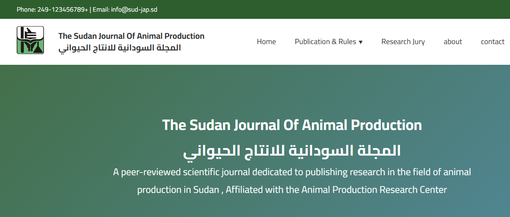
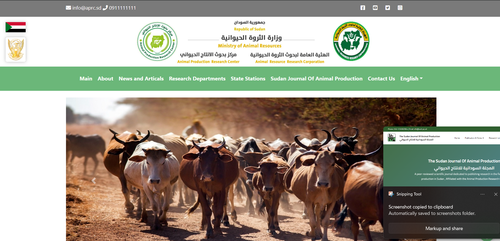
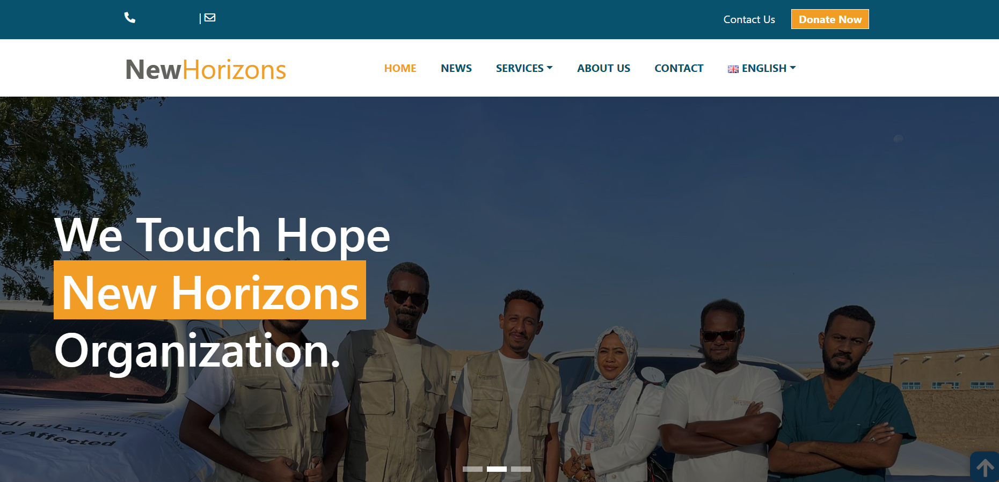
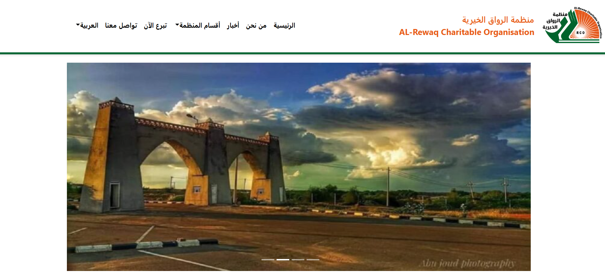

Projects & Websites

Sudanese Journal of Animal Production Research
Main Site — The official platform for Sudanese Journal of Animal Production Research.
OJS System — Built using the Open Journal System for managing academic publications.

Animal Production Research Center


New Horizons Organization
